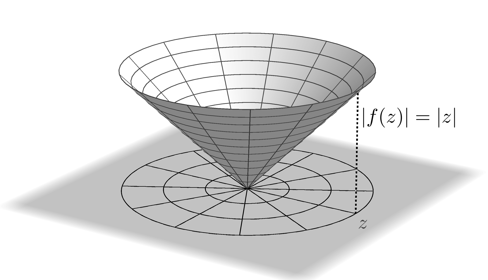
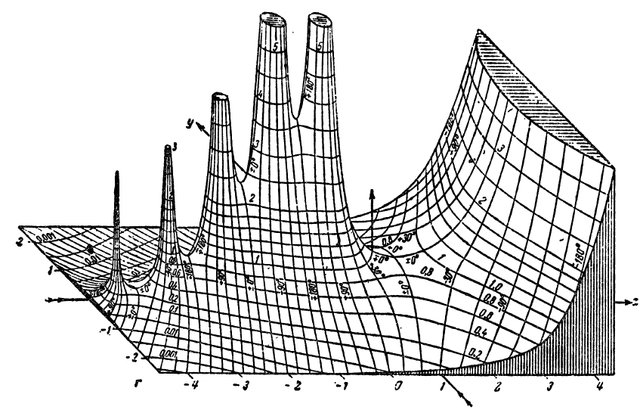

Visualizing Complex Functions
Enhanced phase portraits
What is this?
Phase portraits
Complex functions
\[\begin{aligned} f: \mathbb C \rightarrow \mathbb C \end{aligned} \]live in a 4-dimensional space
Methods to visualize complex functions
- Real and Imaginary components
- Analytic landscapes
- Mappings
- Domain coloring
Real and Imaginary components
\[f(z)= \text{Re}(x,y) + i\, \text{Im}(x,y)\]
\[\begin{aligned}
f(z) & = x^2-y^2 + 2xy \,i
\end{aligned} \]


Re

Analytic landscapes
\[\big|f\left(z\right)\big|\] A historical analytic landscape of \(\big|\Gamma (z)\big|\) from 1909
Funktionentafeln mit Formeln und Kurven by Eugene Jahnke & Fritz Emde
Set Theory
What is a Set?
“A set is an unordered collection of distinct objects.” –Wikipedia
Why unordered?
Why distinct?
Outline
- Notation
- Set Operations
- Proofs
- Advanced Properties
- Philosophy (Outside Syllabus)
- Cardinality (Outside Syllabus)
Notation
Basic Notation
\[A = \{1, 2, 3\}\] \[\{1, 2, 3\} \subset \{1, 2, 3, 4\}\] \[\{1, 2, 3\} \subseteq \{1, 2, 3\}\] \[2 \in \{1, 2, 3\}\] \[4 \notin \{1, 2, 3\}\]Special Sets
\[\begin{aligned} \emptyset &= \{\} \\ \mathbb{N} &= \{0, 1, 2, 3, 4, \dots\} \\ \mathbb{Z} &= \{\dots, -4, -3, -2, -1, 0, 1, 2, 3, 4, \dots\} \\ \mathbb{Q} &= \text{Fractions} \\ \mathbb{R} &= \text{Real Numbers} \\ \mathbb{C} &= \text{Complex Numbers} \\ \end{aligned}\]Set-Builder Notation
\[S := \{x^2 : x \in \mathbb{N}\}\]Exercises
Compute each of the following sets.Note that \(\land\) denotes “and” and \(\lor\) denotes “or.”
- \(\{x : \frac{x}{2} \in \mathbb{Z}\}\) = \(\{\dotsc, -4, -2, 0, 2, 4, \dotsc\}\)
- \(\{\sqrt{x} : x \in \mathbb{N} \land x < 5\}\) = \(\{0, 1, \sqrt{2}, \sqrt{3}, 2\}\)
- \(\{x^3 : x \in [1, 3]\}\) = \([1, 27]\)
Determine whether each statement is true or false.
- \(2018 \in \{x + y\sqrt{2} : x, y \in \mathbb{Z}\}\) — True
- \(\mathbb{Q} = \{\frac{x}{y} : x, y \in \mathbb{N}\}\) — False
Set Operations
Notation
\[A^\complement = \bar{A} = A'\] \[U = \mathbb{U}\] \[A \vartriangle B = A \ominus B = A \oplus B\]Review
Label each statement as true or false.A statement is true if it holds for every set \(A\) and \(B\).
- \(A \cup B = B \cup A\) — True
- \(A = (A^\complement)^\complement\) — True
- \(A \cup B = \{x : x \in A \lor x \in B\}\) — True
- \(A \cup A^\complement = U\) — True
- \(A \subset A \cup B\) — False
- \((A \cup B)^\complement = A^\complement \cap B^\complement\) — True
Proofs
Subset Proofs
To prove \(A \subseteq B\):- If \(A = \emptyset\), we are done. Otherwise, state that \(A \neq \emptyset\).
- Take an arbitrary \(x \in A\).
- Prove that \(x \in B\).
- Since \(x\) is arbitrary, we know that every element in \(A\) is also in \(B\).
Example
For any sets \(A\) and \(B\), prove that \(A \subseteq \{x : x \in A \lor x \in B\}\).- Note that \(A\) is nonempty.
- Therefore, we can take an arbitrary \(a \in A\).
- Since \(a \in A\), we know \(a\) satisfies the contition \(x \in A \lor x \in B\).
- Therefore, we have \(a \in \{x : x \in A \lor x \in B\}\).
- Since \(a\) was arbitrary, we know that \(A \subseteq \{x : x \in A \lor x \in B\}\).
Equality Proofs
We say that \(A = B\) iff \(A \subseteq B\) and \(B \subseteq A\).Therefore, to prove \(A = B\):
- Prove \(A \subseteq B\).
- Prove \(B \subseteq A\).
Exercises
- Prove that \(\mathbb{Z} \subseteq \mathbb{Q}\).
- Prove that \(\{x : x \equiv 3\,\text{(mod 15)}\} \subseteq \{x : x \equiv 3\,\text{(mod 5)}\}\).
- Prove that \(\{x^2 : x \in [1, 2]\} = [1, 4]\).
- Prove that \(\{\sqrt{x} : x \in \mathbb{R}^+\} = \mathbb{R}^+\).
- Prove that \(A \cup A^\complement = U\).
Advanced Properties
De Morgan's Laws
\[(A \cup B)^\complement = A^\complement \cap B^\complement\]\[(A \cap B)^\complement = A^\complement \cup B^\complement\]
\[(A \cup B)^\complement = \{x : \neg(x \in A \lor x \in B)\}\] \[A^\complement \cap B^\complement = \{x : \neg (x \in A) \land \neg (x \in B)\}\]
Exercise
Prove that \((A \cap B)^\complement \subseteq A^\complement \cup B^\complement\).Hints
To prove \(x \in E \cup F\), prove that at least one of \(x \in E\) or \(x \in F\) is true.If \(x \notin E \cap F\), then either \(x \notin E\) or \(x \notin F\).
Solution
- Assume \((A \cap B)^\complement \neq \emptyset\).
- Therefore, take an arbitrary \(x \in (A \cap B)^\complement\).
- We know that \(x \notin A \cap B\).
- Therefore, either \(x \notin A\) or \(x \notin B\).
- Thus, we have \(x \in A^\complement\) or \(x \in B^\complement\).
- Finally, we know \(x \in A^\complement \cup B^\complement\).
Distributive Laws
\[A \cup (B \cap C) = (A \cup B) \cap (A \cup C)\] \[A \cap (B \cup C) = (A \cap B) \cup (A \cap C)\]Exercise
Prove that \(A \cup (B \cap C) \subseteq (A \cup B) \cap (A \cup C)\).Hints
To prove \(x \in E \cap F\), you must prove \(x \in E\) and \(x \in F\).You will need to consider two cases in the proof.
Solution
- Assume \(A \cup (B \cap C) \neq \emptyset\).
- Therefore, take an arbitrary \(x \in A \cup (B \cap C)\).
- We know that either \(x \in A\) or \(x \in B \cap C\).
- From here, we will need to consider two cases.
Case 1
In the first case, we know \(x \in A\).- It follows that \(x \in A \cup B\) and \(x \in A \cup C\).
- Therefore, we have \(x \in (A \cup B) \cap (A \cup C)\) and we are done.
Case 2
In the second case, we know \(x \in B \cap C\).- Therefore, we know \(x \in B\) and \(x \in C\).
- It follows that \(x \in (A \cup B)\) and \(x \in (A \cup C)\).
- Therefore, we have \(x \in (A \cup B) \cap (A \cup C)\) and we are done.
Philosophy
Explicit Perspective
\[A = \{1, 2, 3\}\]Implicit Perspective
\[1 \in A\] \[2 \in A\] \[3 \in A\] \[4 \notin A\] \[5 \notin A\] \[\vdots\]Unordered
\[A = \{1, 2, 3\} \qquad B = \{1, 3, 2\}\]
\[A \stackrel{?}{=} B\]
| \[1 \in A\] \[2 \in A\] \[3 \in A\] \[4 \notin A\] \[5 \notin A\] \[\vdots\] | \[1 \in B\] \[2 \in B\] \[3 \in B\] \[4 \notin B\] \[5 \notin B\] \[\vdots\] |
Distinct
\[A = \{1, 2, 3\} \qquad B = \{1, 2, 2, 3\}\]
\[A \stackrel{?}{=} B\]
| \[1 \in A\] \[2 \in A\] \[3 \in A\] \[4 \notin A\] \[5 \notin A\] \[\vdots\] | \[1 \in B\] \[2 \in B\] \[3 \in B\] \[4 \notin B\] \[5 \notin B\] \[\vdots\] |
Set Equality
\[\{1, 2, 3\} = \{1, 2, 2, 3\}\] These sets contain the “same elements.”What do we mean?
Suppose we had a set of everything; call it \(U\). We would then go through every element \(x \in U\) and check to see that \(x\) is either in both sets or neither.
Definition of Set Equality
The problem is that for \(U\) to contain everything, we need \(U \in U\).To avoid this problem, we only need to check whether every element \(x \in A\) is also in \(B\), and vice-versa. \[\boxed{A = B \iff A \subseteq B \land B \subseteq A}\]
Cardinality
\[\{1, 2, 3\} = \{1, 2, 2, 3\}\]
\[\lvert\{1, 2, 2, 3\}\rvert = 3?\]